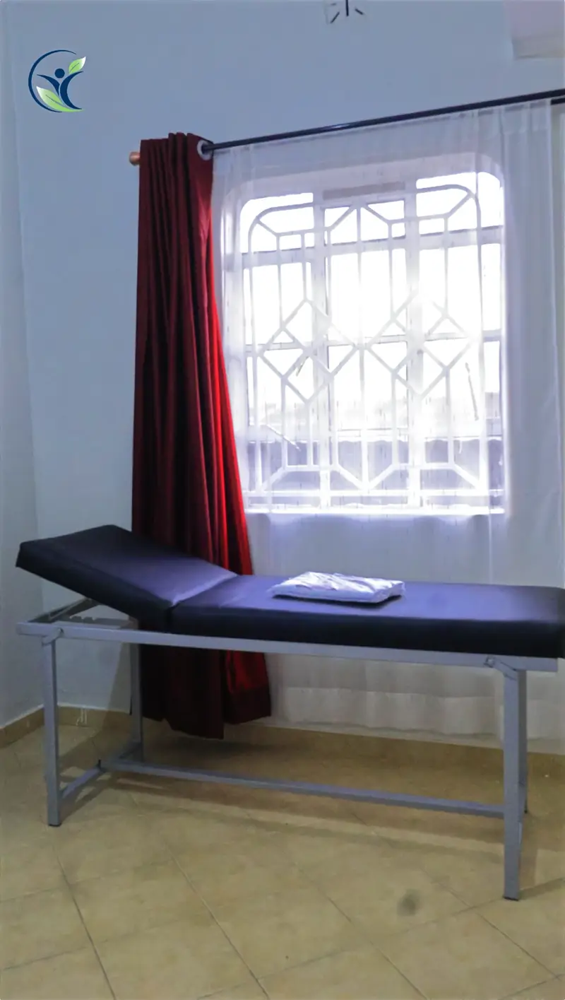

For yourself
You do not have to manage this alone. Speak to us privately and we will explain what treatment involves and what to expect.
Start your recoveryRestoring lives rebuilding futures
Open 24 hours a day, every day
Stages of care, from detox to aftercare
Days of residential care, the length linked to lasting recovery
Confidential assessment and records
Start where you are. We will take it from there.
You do not have to manage this alone. Speak to us privately and we will explain what treatment involves and what to expect.
Start your recoveryWorried about a family member or friend? We will help you plan a caring conversation and support you through their treatment.
Support for familiesDoctors, therapists and employee-assistance providers can refer a client to us. We share updates only with the client’s consent.
Make a referralMost people move through these in order. Your assessment decides where you begin.
Supervised withdrawal with doctors and nurses on hand, so you stay safe and comfortable.
DetailsA stay at the centre with daily therapy and group sessions, away from everyday triggers.
DetailsRegular sessions while you live at home, so you can return to work and family life.
DetailsOngoing check-ins, peer mentors and crisis support to protect everything you have achieved.
DetailsAddiction is a health condition, not a moral failing. We never use shame or pressure. Our team looks at the full picture: your physical health, your mental health and your relationships.
Recovery stories

Fourteen months sober and back at work
“I came in sure I had let everyone down. Nobody here treated me that way. They treated me like someone worth helping.”
Wanjiru K.Former resident
Our son was home for Christmas
“The family sessions taught us how to talk to him without it turning into a fight. That changed everything at home.”
Grace M.Mother of a former resident

Detox without the fear
“I was terrified of withdrawal. The nurses checked on me through the night and I never had to face it alone.”
Peter O.Former resident

Treatment that fit around my job
“I kept working while I got help. My sessions were in the evening and nobody at the office needed to know.”
Achieng A.Outpatient client

Still checking in, two years on
“Aftercare is the part people forget to mention. My mentor still calls me on Sunday evenings.”
Kevin N.Aftercare member
I wasn’t the only one
“Group sessions showed me other people were carrying the same thing. Two of them are still my closest friends.”
Sarah N.Former resident

My brother came home calmer
“Visiting day was the first time in years we sat and talked properly. I hadn’t realised how much I’d missed him.”
James K.Brother of a former resident
Were you treated at Restora? Share your story
No pressure and no judgement. Here is what to expect, so nothing comes as a surprise.
Speak with an intake counsellor. Ask anything you like.
Our clinical team plans your care with you.
Our nurses welcome you and you rest before treatment begins.
Straight answers, in plain language. Still unsure? Call us on +254 795 180 704.
We are open 24 hours a day, every day. Call or message us at any time. You will speak with a trained intake counsellor who will listen, answer your questions and explain the next step. There is no obligation to continue.
Yes. Your assessment and records are private. We only share information with family, referrers or other professionals with your consent.
Our residential program runs for 90 days. Days 1 to 14 are medical stabilisation and detox, days 15 to 60 are the core therapy phase, and days 61 to 90 are integration and relapse prevention. Clinical research shows 90 days is the minimum stay linked to lasting improvement.
Yes, with your consent. We offer family workshops, joint sessions and confidential consultations for spouses, parents and adult children.
We explain the full cost plainly during your admissions conversation, before you commit to anything. There are no surprise charges. Call us and we will talk you through it.
Aftercare is planned from the start. It includes check-ins with your therapist, peer mentors and crisis support. If you slip, we respond with support, not judgement.
We are open 24 hours a day. Call or message us and someone from our admissions team will listen, answer your questions and explain the next step. What you tell us stays private.